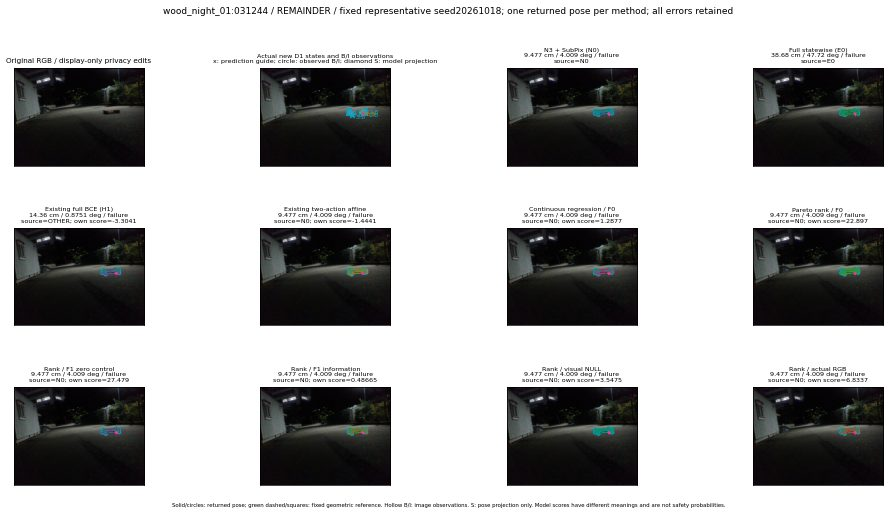

실선은 반환 자세, 초록 점선은 고정 기하 참조입니다. S는 영상 관측이 아닙니다. 점수는 모델별 의미가 다르며 보정된 안전 확률이 아닙니다. 개인정보 처리는 표시 사본에만 적용했습니다.
| 방법·seed | 위치 / 회전 / 공동성공 | 실제 출처 | 선택 후보 | 각 모델 자체 점수 |
|---|---|---|---|---|
| N0 | 9.477 cm / 4.009 deg / failure | N0 | N/A | N/A |
| E0 | 38.68 cm / 47.72 deg / failure | E0 | N/A | N/A |
| E0_REGENERATED | 38.68 cm / 47.72 deg / failure | E0 | E0_REGENERATED | N/A |
| POSEFIX_SUBPIX_PF_ANCHOR | 9.433 cm / 4.127 deg / failure | OTHER | N/A | N/A |
| POSEFIX_SUBPIX_YOLO_ANCHOR | 9.433 cm / 4.127 deg / failure | OTHER | N/A | N/A |
| D1_H1_MLP_s20261018 | 14.36 cm / 0.8751 deg / failure | OTHER | G13/ORIGINAL_WD/sample/1 | -3.304107427597046 |
| D1_H1_MLP_s20261019 | 14.36 cm / 0.8751 deg / failure | OTHER | G13/ORIGINAL_WD/sample/1 | -3.1196463108062744 |
| D1_H1_MLP_s20261020 | 14.36 cm / 0.8751 deg / failure | OTHER | G13/ORIGINAL_WD/sample/1 | -3.227431058883667 |
| D1_H1_PAIR_MLP_s20261018 | 9.477 cm / 4.009 deg / failure | N0 | N0 | -2.4108774662017822 |
| D1_H1_PAIR_MLP_s20261019 | 9.477 cm / 4.009 deg / failure | N0 | N0 | -2.446514368057251 |
| D1_H1_PAIR_MLP_s20261020 | 9.477 cm / 4.009 deg / failure | N0 | N0 | -3.3007428646087646 |
| D1_H1_PAIR_ROLE_AFFINE_s20261018 | 9.477 cm / 4.009 deg / failure | N0 | N0 | -1.4441007375717163 |
| D1_H1_PAIR_ROLE_AFFINE_s20261019 | 9.477 cm / 4.009 deg / failure | N0 | N0 | -1.7999321222305298 |
| D1_H1_PAIR_ROLE_AFFINE_s20261020 | 9.477 cm / 4.009 deg / failure | N0 | N0 | -1.5400362014770508 |
| R_CONT_F0_s20261018 | 9.477 cm / 4.009 deg / failure | N0 | N0 | 1.287697196006775 |
| R_CONT_F0_s20261019 | 9.477 cm / 4.009 deg / failure | N0 | N0 | 1.2084858417510986 |
| R_CONT_F0_s20261020 | 9.477 cm / 4.009 deg / failure | N0 | N0 | 1.1410781145095825 |
| R_ORDER_F0_s20261018 | 9.477 cm / 4.009 deg / failure | N0 | N0 | 22.897178649902344 |
| R_ORDER_F0_s20261019 | 9.477 cm / 4.009 deg / failure | N0 | N0 | 18.26815414428711 |
| R_ORDER_F0_s20261020 | 9.477 cm / 4.009 deg / failure | N0 | N0 | -9.226390838623047 |
| R_ORDER_F1_ZERO_s20261018 | 9.477 cm / 4.009 deg / failure | N0 | N0 | 27.479211807250977 |
| R_ORDER_F1_ZERO_s20261019 | 9.477 cm / 4.009 deg / failure | N0 | N0 | 29.807863235473633 |
| R_ORDER_F1_ZERO_s20261020 | 9.477 cm / 4.009 deg / failure | N0 | N0 | 20.176721572875977 |
| R_ORDER_F1_s20261018 | 9.477 cm / 4.009 deg / failure | N0 | N0 | 0.4866489768028259 |
| R_ORDER_F1_s20261019 | 9.477 cm / 4.009 deg / failure | N0 | N0 | 6.010130882263184 |
| R_ORDER_F1_s20261020 | 9.477 cm / 4.009 deg / failure | N0 | N0 | 4.537898540496826 |
| V_ORDER_NULL_s20261018 | 9.477 cm / 4.009 deg / failure | N0 | N0 | 3.5475308895111084 |
| V_ORDER_NULL_s20261019 | 9.477 cm / 4.009 deg / failure | N0 | N0 | 2.489438056945801 |
| V_ORDER_NULL_s20261020 | 9.477 cm / 4.009 deg / failure | N0 | N0 | 8.890408515930176 |
| V_ORDER_RGB_s20261018 | 9.477 cm / 4.009 deg / failure | N0 | N0 | 6.833681106567383 |
| V_ORDER_RGB_s20261019 | 9.477 cm / 4.009 deg / failure | N0 | N0 | 2.3896241188049316 |
| V_ORDER_RGB_s20261020 | 9.477 cm / 4.009 deg / failure | N0 | N0 | -2.3140199184417725 |